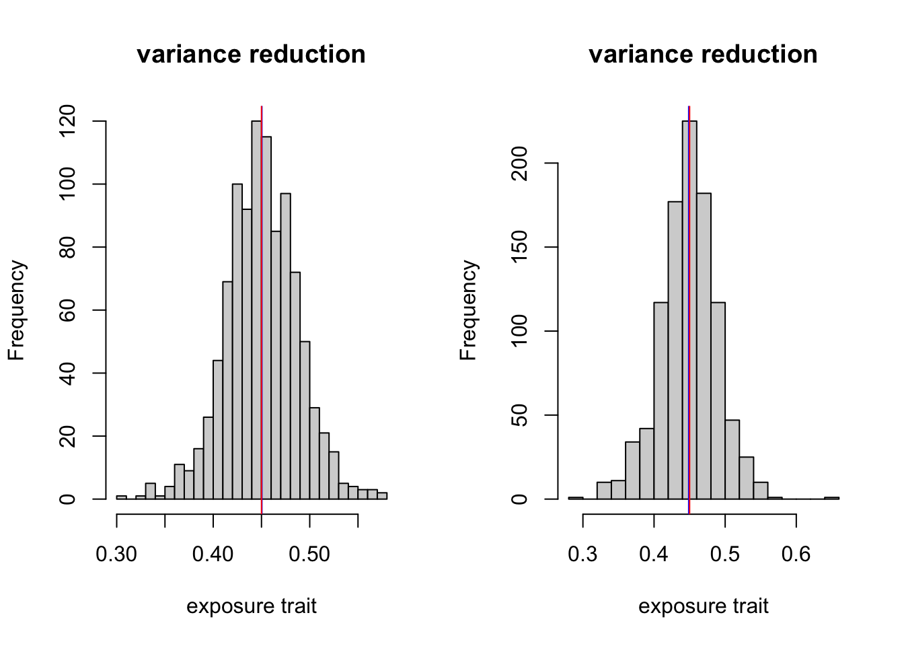
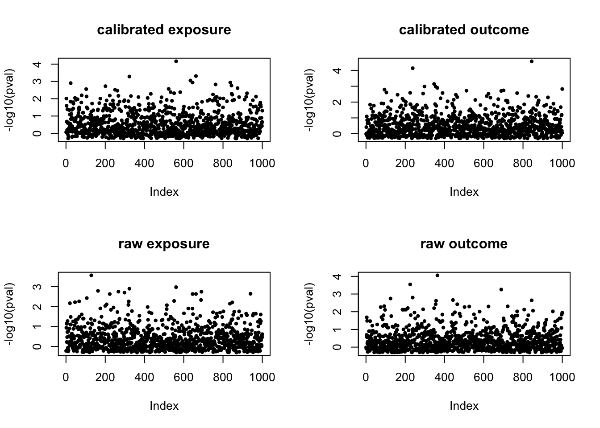

Perform MR to assess causal effect estimate
Yunqi Yang
5/15/2023
Last updated: 2023-06-13
Checks: 7 0
Knit directory: simulation-calibrated-mr/
This reproducible R Markdown analysis was created with workflowr (version 1.6.2). The Checks tab describes the reproducibility checks that were applied when the results were created. The Past versions tab lists the development history.
Great! Since the R Markdown file has been committed to the Git repository, you know the exact version of the code that produced these results.
Great job! The global environment was empty. Objects defined in the global environment can affect the analysis in your R Markdown file in unknown ways. For reproduciblity it’s best to always run the code in an empty environment.
The command set.seed(20230217) was run prior to running the code in the R Markdown file. Setting a seed ensures that any results that rely on randomness, e.g. subsampling or permutations, are reproducible.
Great job! Recording the operating system, R version, and package versions is critical for reproducibility.
Nice! There were no cached chunks for this analysis, so you can be confident that you successfully produced the results during this run.
Great job! Using relative paths to the files within your workflowr project makes it easier to run your code on other machines.
Great! You are using Git for version control. Tracking code development and connecting the code version to the results is critical for reproducibility.
The results in this page were generated with repository version 407b0c8. See the Past versions tab to see a history of the changes made to the R Markdown and HTML files.
Note that you need to be careful to ensure that all relevant files for the analysis have been committed to Git prior to generating the results (you can use wflow_publish or wflow_git_commit). workflowr only checks the R Markdown file, but you know if there are other scripts or data files that it depends on. Below is the status of the Git repository when the results were generated:
Ignored files:
Ignored: .DS_Store
Ignored: .Rhistory
Ignored: .Rproj.user/
Unstaged changes:
Modified: analysis/sim_real_dat.Rmd
Note that any generated files, e.g. HTML, png, CSS, etc., are not included in this status report because it is ok for generated content to have uncommitted changes.
These are the previous versions of the repository in which changes were made to the R Markdown (analysis/mr_real_dat.Rmd) and HTML (docs/mr_real_dat.html) files. If you’ve configured a remote Git repository (see ?wflow_git_remote), click on the hyperlinks in the table below to view the files as they were in that past version.
| File | Version | Author | Date | Message |
|---|---|---|---|---|
| Rmd | 407b0c8 | yunqiyang0215 | 2023-06-13 | wflow_publish("analysis/mr_real_dat.Rmd") |
| html | 0bc4ce7 | yunqiyang0215 | 2023-06-13 | Build site. |
| Rmd | 77ce4f5 | yunqiyang0215 | 2023-06-13 | wflow_publish("analysis/mr_real_dat.Rmd") |
| html | a6a61c1 | yunqiyang0215 | 2023-06-13 | Build site. |
| Rmd | 0febe6b | yunqiyang0215 | 2023-06-13 | wflow_publish("analysis/mr_real_dat.Rmd") |
| html | 2be54c1 | yunqiyang0215 | 2023-05-30 | Build site. |
| Rmd | 72e026d | yunqiyang0215 | 2023-05-30 | wflow_publish("analysis/mr_real_dat.Rmd") |
| html | a7ce352 | yunqiyang0215 | 2023-05-19 | Build site. |
| Rmd | bf87ba0 | yunqiyang0215 | 2023-05-19 | wflow_publish("analysis/mr_real_dat.Rmd") |
| html | d70844d | yunqiyang0215 | 2023-05-19 | Build site. |
| Rmd | 811fef5 | yunqiyang0215 | 2023-05-19 | wflow_publish("analysis/mr_real_dat.Rmd") |
| html | 7927163 | yunqiyang0215 | 2023-05-15 | Build site. |
| Rmd | 8f9d843 | yunqiyang0215 | 2023-05-15 | wflow_publish("analysis/mr_real_dat.Rmd") |
| html | 48ec1a1 | yunqiyang0215 | 2023-05-15 | Build site. |
| Rmd | 8b572a2 | yunqiyang0215 | 2023-05-15 | wflow_publish("analysis/mr_real_dat.Rmd") |
| html | 8ae0fa6 | yunqiyang0215 | 2023-05-15 | Build site. |
| Rmd | 8fa3ed3 | yunqiyang0215 | 2023-05-15 | wflow_publish("analysis/mr_real_dat.Rmd") |
Description:
Perform MR to assess causal effect estimate. We should focus on both effect size estimate and standard error of the causal effect. Here the sample size for external data \(N=1e4\) and internal data \(n=1e3\).
library(MendelianRandomization)
dat = readRDS("./data/realdata.rds")
source("./code/calibrated_mr.R")Compute raw and calibrated estimator for each SNP, adjusted for non-transmitted allele
n = 1e3
p = 1e3
N = 1e4
y1.cali <- matrix(NA, nrow = p, ncol = 2)
y1.raw <- matrix(NA, nrow = p, ncol = 2)
colnames(y1.cali) <- c("point_estimate", "var_estimate")
colnames(y1.raw) <- c("point_estimate", "var_estimate")
y2.cali <- matrix(NA, nrow = p, ncol = 2)
y2.raw <- matrix(NA, nrow = p, ncol = 2)
colnames(y2.cali) <- c("point_estimate", "var_estimate")
colnames(y2.raw) <- c("point_estimate", "var_estimate")for (i in 1:p){
dat1_valid <- cbind(dat[["pheno"]][1:n,1], dat[["trans"]][1:n, i], dat[["nontrans"]][1:n, i])
dat1_ext <- cbind(dat[["pheno"]][,1], dat[["trans"]][, i])
coef_ext <- compute_sumstat(dat1_ext[,1], dat1_ext[,2])$bhat
res_int <- compute_sumstat(dat1_valid[,1], dat1_valid[,2])
res_int_adj <- compute_adj_sumstat(dat1_valid[,1], dat1_valid[,2], dat1_valid[,3])
res1 <- calibrated_estimator(dat1_valid, N, res_int$resid, res_int_adj$resid, res_int$bhat, res_int_adj$bhat, coef_ext)
# Select different samples for outcome trait.
dat2_valid <- cbind(dat[["pheno"]][(1+1e3):(n+1e3),2], dat[["trans"]][(1+1e3):(n+1e3), i], dat[["nontrans"]][(1+1e3):(n+1e3), i])
dat2_ext <- cbind(dat[["pheno"]][, 2], dat[["trans"]][, i])
coef_ext <- compute_sumstat(dat2_ext[,1], dat2_ext[,2])$bhat
res_int <- compute_sumstat(dat2_valid[,1], dat2_valid[,2])
res_int_adj <- compute_adj_sumstat(dat2_valid[,1], dat2_valid[,2], dat2_valid[,3])
res2 <- calibrated_estimator(dat2_valid, N, res_int$resid, res_int_adj$resid, res_int$bhat, res_int_adj$bhat, coef_ext)
y1.cali[i, ] = c(res1$tau_cal, res1$var_tau_cal)
y2.cali[i, ] = c(res2$tau_cal, res2$var_tau_cal)
y1.raw[i, ] = c(res1$tau_raw, res1$var_tau_raw)
y2.raw[i, ] = c(res2$tau_raw, res2$var_tau_raw)
}
head(y1.cali) point_estimate var_estimate
[1,] 0.01884243 0.010298809
[2,] 0.30010010 0.013500394
[3,] 0.28823642 0.016650835
[4,] 0.11479949 0.008491249
[5,] 0.12560241 0.010021305
[6,] 0.04527380 0.008878069head(y1.raw) point_estimate var_estimate
[1,] -0.12287716 0.01664548
[2,] 0.25809722 0.02703231
[3,] 0.30302423 0.02832954
[4,] 0.06831163 0.01687263
[5,] 0.23996186 0.01792277
[6,] 0.12136977 0.01616087head(y2.cali) point_estimate var_estimate
[1,] -0.007635524 0.02112290
[2,] 0.143783181 0.02707866
[3,] 0.011293817 0.03211023
[4,] 0.234090945 0.01796442
[5,] -0.052220899 0.01841792
[6,] 0.204296647 0.01893981head(y2.raw) point_estimate var_estimate
[1,] -0.009268334 0.03776789
[2,] -0.063871894 0.04605876
[3,] 0.320881881 0.06391018
[4,] 0.432684563 0.03501042
[5,] 0.208951281 0.03613458
[6,] 0.403257798 0.03561577Compute unadjusted SNP effect size & standard errors
This is just to calculate GWAS summary stat from external data.
n = 1e3
p = 1e3
N = 1e4
y1 <- matrix(NA, nrow = p, ncol = 2)
y2 <- matrix(NA, nrow = p, ncol = 2)
colnames(y1) <- c("point_estimate", "std.error")
colnames(y2) <- c("point_estimate", "std.error")
for (i in 1:p){
dat1_ext <- cbind(dat[["pheno"]][,1], dat[["trans"]][, i])
dat2_ext <- cbind(dat[["pheno"]][, 2], dat[["trans"]][, i])
fit1 <- lm(dat1_ext[,1] ~ dat1_ext[,2])
fit2 <- lm(dat2_ext[,1] ~ dat2_ext[,2])
y1[i, ] = c(summary(fit1)$coef[2,1], summary(fit1)$coef[2,2])
y2[i, ] = c(summary(fit2)$coef[2,1], summary(fit2)$coef[2,2])
}par(mfrow = c(1,2))
plot(y1.cali[,2], y1.raw[,2], pch = 20, xlab = "calibrated estimator", ylab = "raw estimator", main = "SNP variance: exposure trait")
abline(a = 0, b = 1, col = "red")
plot(y2.cali[,2], y2.raw[,2], pch = 20, xlab = "calibrated estimator", ylab = "raw estimator", main = "SNP variance: outcome trait")
abline(a = 0, b = 1, col = "red")
Calculate z-scores
z2p <- function(zscore){
pval <- pnorm(zscore, mean = 0, sd = 1, lower.tail = FALSE)*2
return(pval)
}z1.cali = y1.cali[,1]/sqrt(y1.cali[,2])
z1.raw = y1.raw[,1]/sqrt(y1.raw[,2])
z2.cali = y2.cali[,1]/sqrt(y2.cali[,2])
z2.raw = y2.raw[,1]/sqrt(y2.raw[,2])
z1 = y1[, 1]/y1[,2]
z2 = y2[, 1]/y2[,2]
p1.cali = z2p(z1.cali)
p1.raw = z2p(z1.raw)
p2.cali = z2p(z2.cali)
p2.raw = z2p(z2.raw)
p1 = z2p(z1)
p2 = z2p(z2)par(mfrow = c(2,2))
plot(-log10(p1.cali), pch = 20, cex = 0.8, ylab = "-log10(pval)", main = "calibrated exposure")
plot(-log10(p2.cali), pch = 20, cex = 0.8, ylab = "-log10(pval)", main = "calibrated outcome")
plot(-log10(p1.raw), pch = 20, cex = 0.8, ylab = "-log10(pval)", main = "raw exposure")
plot(-log10(p2.raw), pch = 20, cex = 0.8, ylab = "-log10(pval)", main = "raw outcome")
par(mfrow = c(1,2))
plot(-log10(p1), pch = 20, cex = 0.8, ylab = "-log10(pval)", main = "unadjusted exposure")
plot(-log10(p2), pch = 20, cex = 0.8, ylab = "-log10(pval)", main = "unadjusted outcome")
Perform different MR methods to assess the causal effect estimate.
MRInput.cali <- mr_input(bx = y1.cali[,1],
bxse = sqrt(y1.cali[,2]),
by = y2.cali[,1],
byse = sqrt(y2.cali[,2]))
MRInput.raw <- mr_input(bx = y1.raw[,1],
bxse = sqrt(y1.raw[,2]),
by = y2.raw[,1],
byse = sqrt(y2.raw[,2]))
egger.cali <- mr_egger(MRInput.cali)
egger.raw <- mr_egger(MRInput.raw)
ivw.cali <- mr_ivw(MRInput.cali)
ivw.raw <- mr_ivw(MRInput.raw)egger.cali
MR-Egger method
(variants uncorrelated, random-effect model)
Number of Variants = 1000
------------------------------------------------------------------
Method Estimate Std Error 95% CI p-value
MR-Egger 0.452 0.069 0.316, 0.588 0.000
(intercept) 0.046 0.010 0.025, 0.066 0.000
------------------------------------------------------------------
Residual Standard Error : 1.136
Heterogeneity test statistic = 1287.1594 on 998 degrees of freedom, (p-value = 0.0000)
I^2_GX statistic: 0.0%egger.raw
MR-Egger method
(variants uncorrelated, random-effect model)
Number of Variants = 1000
------------------------------------------------------------------
Method Estimate Std Error 95% CI p-value
MR-Egger 0.292 0.075 0.145, 0.439 0.000
(intercept) 0.027 0.014 0.000, 0.054 0.047
------------------------------------------------------------------
Residual Standard Error : 1.129
Heterogeneity test statistic = 1272.2835 on 998 degrees of freedom, (p-value = 0.0000)
I^2_GX statistic: 0.0%ivw.cali
Inverse-variance weighted method
(variants uncorrelated, random-effect model)
Number of Variants : 1000
------------------------------------------------------------------
Method Estimate Std Error 95% CI p-value
IVW 0.695 0.042 0.613, 0.777 0.000
------------------------------------------------------------------
Residual standard error = 1.146
Heterogeneity test statistic (Cochran's Q) = 1311.8226 on 999 degrees of freedom, (p-value = 0.0000). I^2 = 23.8%. ivw.raw
Inverse-variance weighted method
(variants uncorrelated, random-effect model)
Number of Variants : 1000
------------------------------------------------------------------
Method Estimate Std Error 95% CI p-value
IVW 0.410 0.046 0.320, 0.500 0.000
------------------------------------------------------------------
Residual standard error = 1.131
Heterogeneity test statistic (Cochran's Q) = 1277.3362 on 999 degrees of freedom, (p-value = 0.0000). I^2 = 21.8%. MRInput <- mr_input(bx = y1[,1],
bxse = y1[,2],
by = y2[,1],
byse = y2[,2])
egger <- mr_egger(MRInput)
ivw <- mr_ivw(MRInput)
egger
MR-Egger method
(variants uncorrelated, random-effect model)
Number of Variants = 1000
------------------------------------------------------------------
Method Estimate Std Error 95% CI p-value
MR-Egger 1.401 0.048 1.307, 1.495 0.000
(intercept) 0.011 0.005 0.001, 0.021 0.028
------------------------------------------------------------------
Residual Standard Error : 0.349
Residual standard error is set to 1 in calculation of confidence interval when its estimate is less than 1.
Heterogeneity test statistic = 121.7225 on 998 degrees of freedom, (p-value = 1.0000)
I^2_GX statistic: 24.9%ivw
Inverse-variance weighted method
(variants uncorrelated, random-effect model)
Number of Variants : 1000
------------------------------------------------------------------
Method Estimate Std Error 95% CI p-value
IVW 1.500 0.016 1.468, 1.532 0.000
------------------------------------------------------------------
Residual standard error = 0.356
Residual standard error is set to 1 in calculation of confidence interval when its estimate is less than 1.
Heterogeneity test statistic (Cochran's Q) = 126.5304 on 999 degrees of freedom, (p-value = 1.0000). I^2 = 0.0%.
sessionInfo()R version 4.1.1 (2021-08-10)
Platform: x86_64-apple-darwin20.6.0 (64-bit)
Running under: macOS Monterey 12.0.1
Matrix products: default
BLAS: /usr/local/Cellar/openblas/0.3.18/lib/libopenblasp-r0.3.18.dylib
LAPACK: /usr/local/Cellar/r/4.1.1_1/lib/R/lib/libRlapack.dylib
locale:
[1] en_US.UTF-8/en_US.UTF-8/en_US.UTF-8/C/en_US.UTF-8/en_US.UTF-8
attached base packages:
[1] stats graphics grDevices utils datasets methods base
other attached packages:
[1] MendelianRandomization_0.7.0 workflowr_1.6.2
loaded via a namespace (and not attached):
[1] Rcpp_1.0.8.3 lattice_0.20-44 tidyr_1.2.1 foreach_1.5.2
[5] glmnet_4.1-4 rprojroot_2.0.2 digest_0.6.28 utf8_1.2.2
[9] gmp_0.7-1 R6_2.5.1 MatrixModels_0.5-1 evaluate_0.14
[13] highr_0.9 httr_1.4.2 ggplot2_3.3.5 pillar_1.6.4
[17] iterpc_0.4.2 rlang_1.0.6 lazyeval_0.2.2 rstudioapi_0.13
[21] data.table_1.14.6 SparseM_1.81 whisker_0.4 jquerylib_0.1.4
[25] Matrix_1.5-3 rmarkdown_2.11 splines_4.1.1 stringr_1.4.0
[29] htmlwidgets_1.6.2 munsell_0.5.0 compiler_4.1.1 httpuv_1.6.3
[33] xfun_0.27 pkgconfig_2.0.3 shape_1.4.6 arrangements_1.1.9
[37] htmltools_0.5.5 tidyselect_1.1.1 tibble_3.1.5 codetools_0.2-18
[41] fansi_0.5.0 viridisLite_0.4.0 crayon_1.4.1 dplyr_1.0.7
[45] later_1.3.0 MASS_7.3-54 grid_4.1.1 jsonlite_1.7.2
[49] gtable_0.3.0 lifecycle_1.0.1 git2r_0.28.0 magrittr_2.0.1
[53] scales_1.1.1 cli_3.1.0 stringi_1.7.5 cachem_1.0.6
[57] fs_1.5.0 promises_1.2.0.1 robustbase_0.95-1 bslib_0.4.1
[61] ellipsis_0.3.2 generics_0.1.2 vctrs_0.3.8 rjson_0.2.21
[65] iterators_1.0.14 tools_4.1.1 glue_1.4.2 DEoptimR_1.0-13
[69] purrr_0.3.4 fastmap_1.1.0 survival_3.2-11 yaml_2.2.1
[73] colorspace_2.0-2 plotly_4.10.1 knitr_1.36 sass_0.4.4
[77] quantreg_5.94